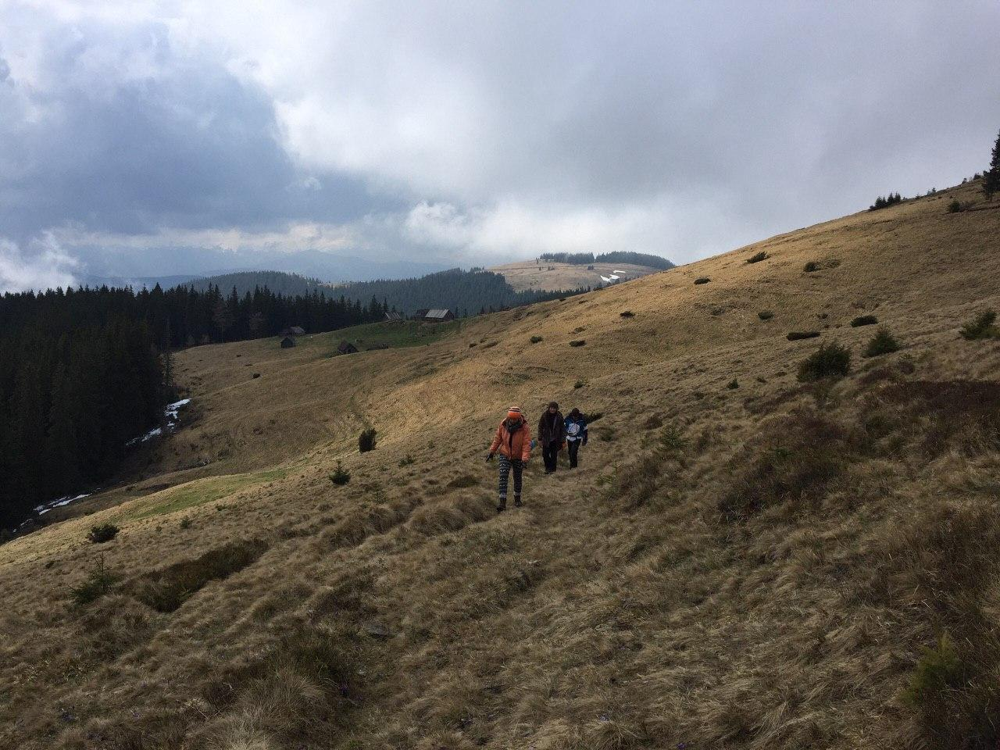
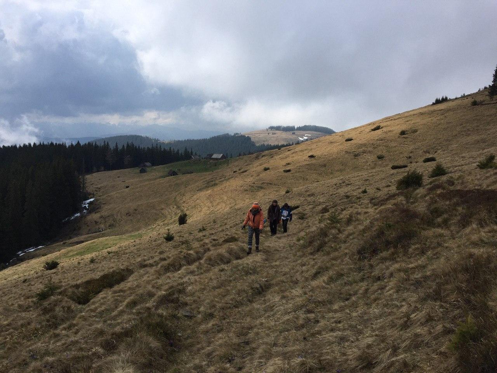

Скелі Довбуша
Скелі Довбуша — скельно-печерний комплекс, унікальна пам'ятка історії та природи. Розташована за 3 км від села Бубнища.
Маршрут
На "Тропе Довбуша" чимало мальовничих місць: починаючи з вигину самої стежки, що пролягла між ялиць і буків, що йде по корінню і моху на каменях, і закінчуючи пейзажами, що відкриваються з оглядових майданчиків. Однак для особливих вражень (і фотографій!) Не лінуйтеся піднятися за Скалу Довбуша на гору Маковицю. Нехай це відбере трохи більше часу і набагато більше сил, однак від побаченої зверху панорами сіл і містечок, Прута, звивається змією між зелених гір, та й самих Карпат - пагорбів, густо вкритих лісом, полонин і віддалених засніжених вершин, ви отримаєте незабутню емоційну віддачу . За цим горбах колись ходив сам Довбуш!

 
